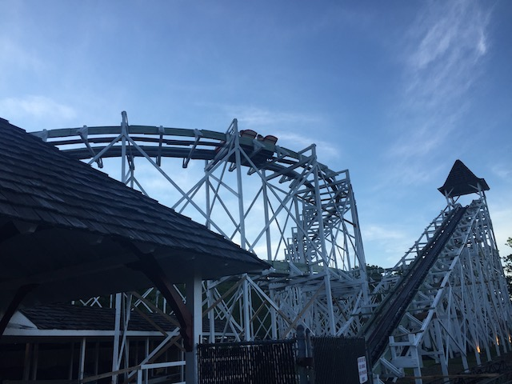
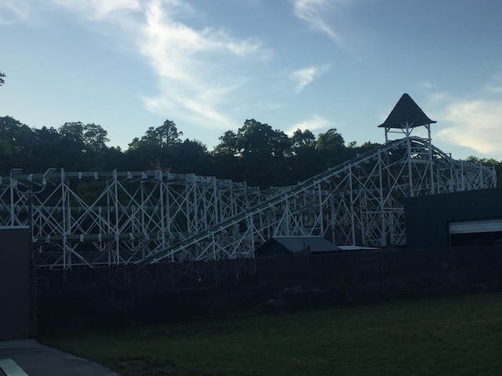

| |
Leap the Dips Review

We're here at Lakemont Park, where we'll be reviewing one of the most interesting coasters in the world as well as the reason why Lakemont Park still exists at all. Leap the Dips. There's one thing that makes Leap the Dips special. This ride is OLD!!! REALLY F*CKING OLD!!! I know it's the oldest coaster in the world. But at the same time, there are plenty of wooden coasters that are over 100 years old that don't feel that old. Hell, even the Scenic Railways. Yeah. They feel pretty old. But even THAT doesn't hold a candle to Leap the Dips. Yeah. Leap the Dips may only be 12 years older than Rutschebanen @ Tivoli Gardens. But it just feels ANCIENT!!! To put into prespective just how old Leap the Dips is, it is older than the oldest movie (that has a plot. There are older videos, but those were essentially just video clips. They never had a plot and if those count as movies, then so does my raw footage). It's older than the first ever flight, was made during the Teddy Roosevelt administration, and it is possible for Civil War veterans to have ridden this coaster. THAT is how old this coaster is. And....it FEELS that old. Hey. I assumed you played RCT. Remember the Side Friction coaster? This is what that ride type was based on. And while in 1902 when Leap the Dips was built, there were TONS of side friction coasters and there was absolutely nothing special about Leap the Dips. It would've been treated like a Boomerang or SLC back in the day. But because EVERY SINGLE OTHER side friction coaster was demolished (The 2nd to last one to operate was Runway Coaster which ran at Rotunda in England until the park closed in 2003. And that one was much newer than Leap the Dips, opening in the 1920s as a carnival coaster until it found a permanent home at Rotunda in the 90s until that park closed). And unlike the other ancient RCT coasters, there's still a Side-Friction coaster still running with Leap the Dips. There's not a single Virginia Reel left running in the world. And the one that supposedly is the last one left, is not one, as THAT'S NOT A CREDIT!!! And honestly, that doesn't even seem like a good ride with the only reason anyone's even remotely interested in it because it supposedly has ties to an extinct coaster model. And I honestly thought that the Reverser Coaster was solely made up for RCT until learning that there was one that actually was built at some park called Saltair in Magna, Utah (essentially a suburb of Salt Lake City) until it was destroyed in a fire in 1925 (nearly 100 years ago). Yeah. Leap the Dips is in the same category as these ancient extinct coasters. And while Leap the Dips may not be extinct, it sure as f*ck feels ANCIENT!!! So yeah. Let's hop on a peice of history. We get in the cars, and....this honestly was the biggest surprise for this ride. I honestly couldn't believe it when I rode it. This ride has NO RESTRAINTS!!! AT ALL!!! Sure, there's a bar you CAN hold onto. But....NOTHING is holding you in. Not even a measly seatbelt. Which....really makes this ride seem.....kind of sketchy. But that's what I love about it. =) It's then time to go. No, the ride operator doesn't dispatch the train by pushing a button like on a normal coaster. No. The operator will DRAG THE CAR OUT OF THE STATION!!! Pulling it over towards the lifthill, where the lifthill motor will then take over from there, carrying the ride up the lifthill. Yikes! That has GOT to be heavy! And while Leap the Dips may have HORRENDOUS capacity (this ride would be a nightmare to run at any major park simply because....the capacity is truly attrocious. Think of a Wild Mouse that only runs one car. That's the throughput of Leap the Dips!). But despite that, it can NOT be easy to run Leap the Dips. Doing it one time? I might be able to do that with practice. But REPEATEDLY doing that!? NO!!! I'd so easily throw out my back! So props to the Leap the Dips ride operators. This is NOT a coaster I could operate (and I say this as a former ride operator). OK. Climbing up the lifthill. Normally, when discussing lifthills, I talk about the view. Ocassionaly, I'll discuss the awkward feeling of feeling like you're going to fall out when talking about rides with vertical lifthills. On the Leap the Dips? You go up that lifthill, wondering if the motor of the lifthill is strong enough to get us to the top! Cause....this motor genuinely feels like it struggled to get the car up the top. To the point where it actually gave us some anticipation, even though this lifthill is far smaller than most coasters and the height from the top is of cliff jumping height. We reach the top and CHEER!!! We then head down a tiny little drop, and WHOA!!! I know we're not going that fast, but because of the design of the ride and the fact that there's no restraints, it feels much faster than it actually is). We then head around a turnaround that......honestly, the closest I can come to describing the turn would be the turn on Perilous Plunge before the drop. Only even more awkard and rickety. We then go through some straight track. Yeah. On any other ride, this would be boring and I'd be ripping it to shreds. But because Leap the Dips is so rickety and it feels like it could collapse from just how damn old this ride is, this is actually a lot of fun! And look on the horizon! A dip! We then dip down and back up. There's not very much airtime here, but there is SOME!!! And because there's no seatbelt at all, that airtime actually feels freaky. In a way, I sort of see this as feeling like the galloping of riding a horse. We then go through another turn and through some more straight track. Just cruising and.....I'm really enjoying this. And....oh look. Another dip. Here it comes. And....KLUNK!!! It feels less like a drop and more like a pothole. But hey. I'm having a blast, and it is getting faster, which....on a structure like this, really makes for an exciting ride. We then head through another turn, going right under the first turn. We may be going a little faster, but we're also a little closer to the ground. Cruise some more, and....oh look. DIP!!! Another quick little set of dips. WEE!!! MILD AIRTIME WITH NO RESTRAINTS!!! HOLD ON!!! =) We go around another turn underneath the previous turn. That's pretty cool. Oh look, It's the roof of the station. Wave hello to the roof. And....another drop!!! WEE!!! We finally reach the ground and though we're not actually going fast, it still feels fast and fun. We rise up a tiny hill. Cool, but let's keep it real. Being practically on the ground, a lot of the thrill from being up high is reduced. But hey. Go around a turn, and.....FINAL DIPS!!! TINY AIRTIME!!! WOO HOO!!! We then go into some straight track, and....we're slowing down. By the ride operator, who controls the brakes manually. That's actually pretty cool. We're then pushed back into the station. And that's Leap the Dips. When I rode this, I honestly was expecting some standard crappy family coaster that was only fun for the novelty factor and historical points. But in all honesty, this ride is just a TON of fun! And yeah. Much of that comes fro the age. Just how old and rickety it is. How....unstable it feels. And of couse, the fact that you're just riding in the car with nothing holding you in, makes it so much more fun. And yeah. Leap the Dips is just a TON OF FUN!!! This is FAR from the best ride ever. If you read this site, or even are aware of the new coasters being built today, it's clear that much better rides have been built. But god damn it! Something about this ride is just so damn fun! Now Leap the Dips is currently SBNO. I know the ride has gone through multiple periods of being SBNO. Hell, the ride was originally supposed to be demolished in the 1980s until ACE stepped in and put in the money to save the ride. I may not agree that much with the coaster preservation community, specifically since they mostly spend their time nowadays bitching about RMC and crying about rides like Mean Streak getting RMCed and replaced with Steel Vengeance, and I roll my eyes at that. But when it comes to this and saving Giant Dipper @ Belmont Park, I agree with them 100% and fully support their efforts in restoring both of these rides. And I wish Lakemont Park and Leap the Dips all the luck in the world. Really hope the ride keeps running and that this piece of history continues to live on.
7/10
Location: Lakemont Park
Opened: 1902
Built by: Edward Joy Morris
Last Ridden: June 24, 2021
Leap the Dips Photos



Home
|